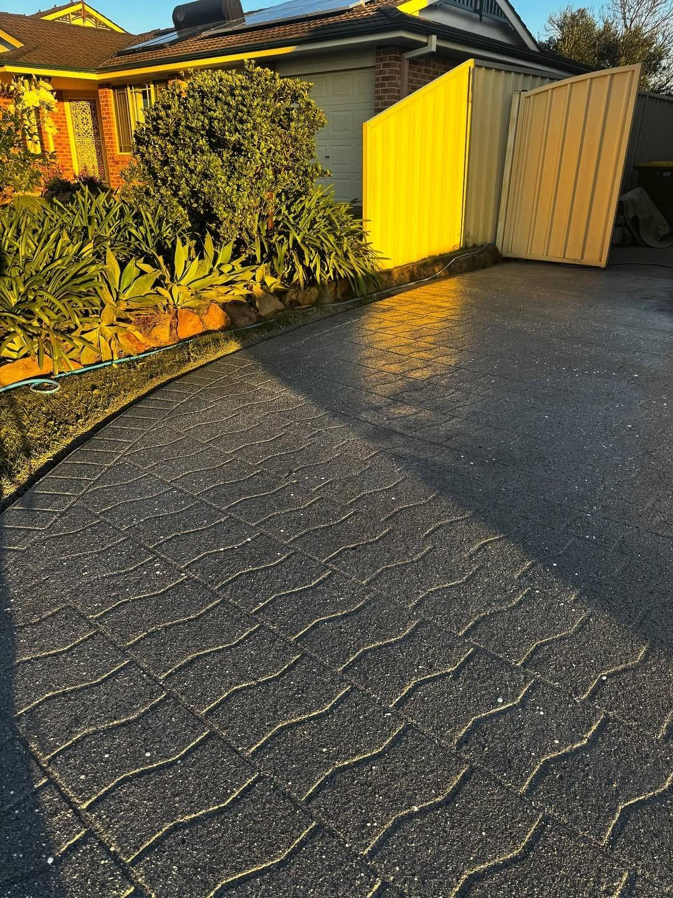
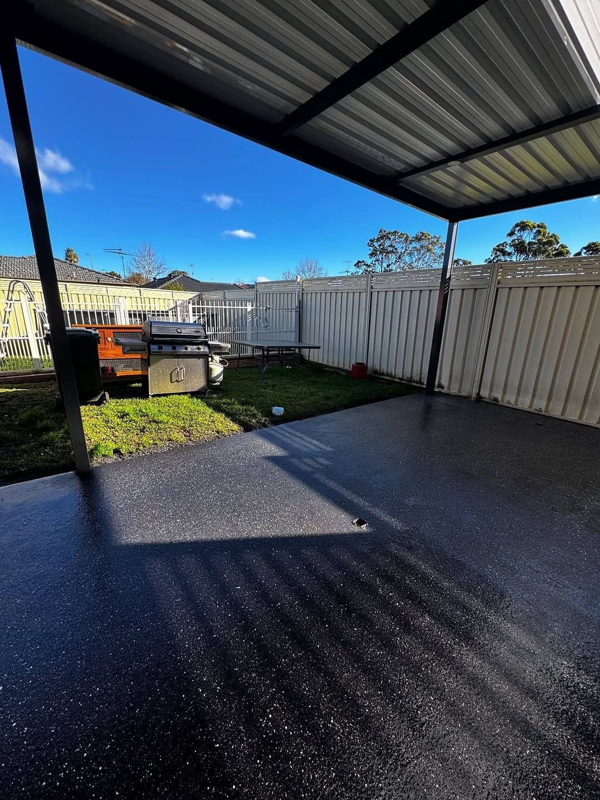
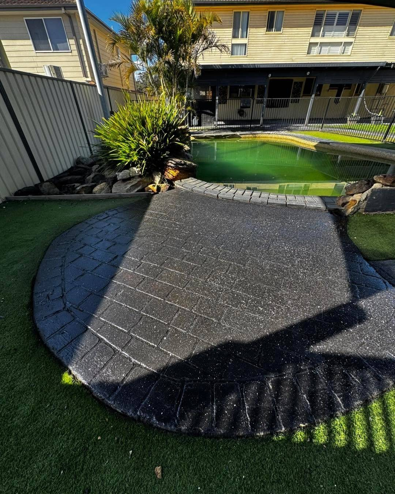
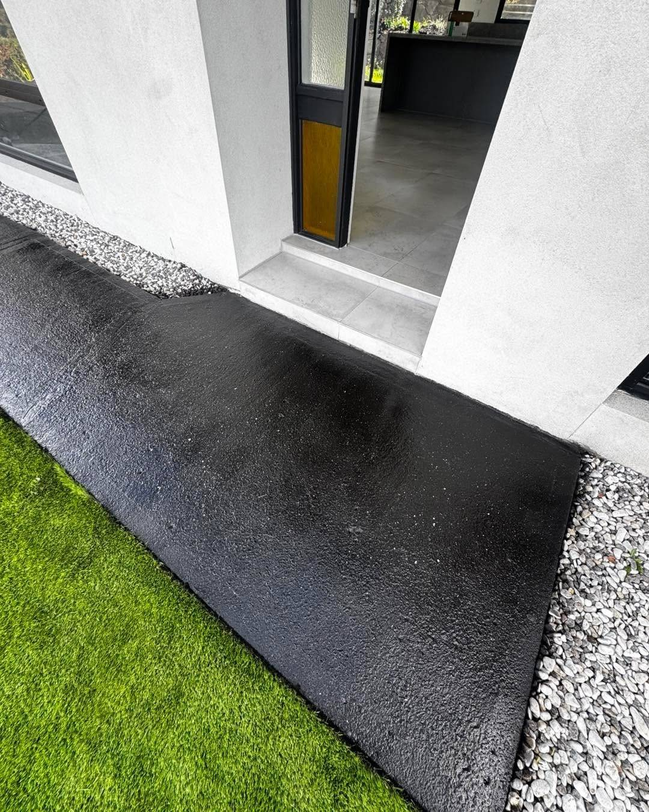
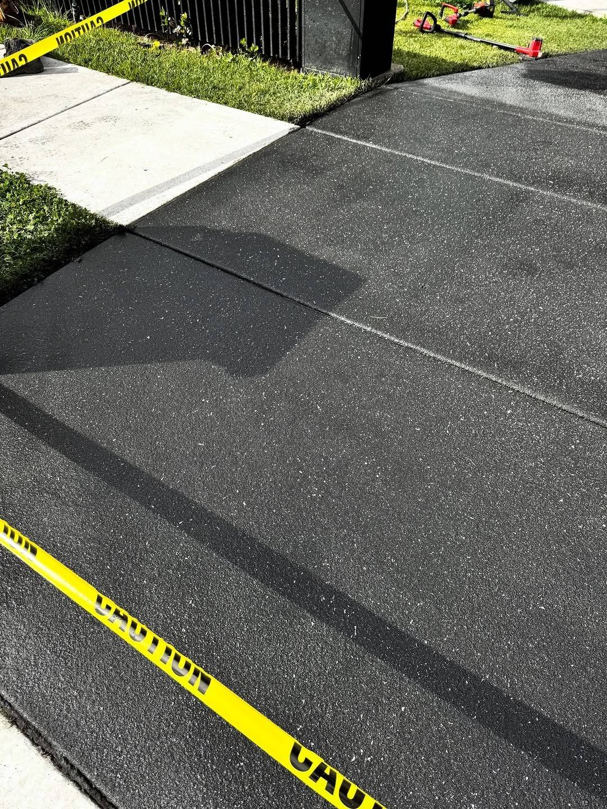
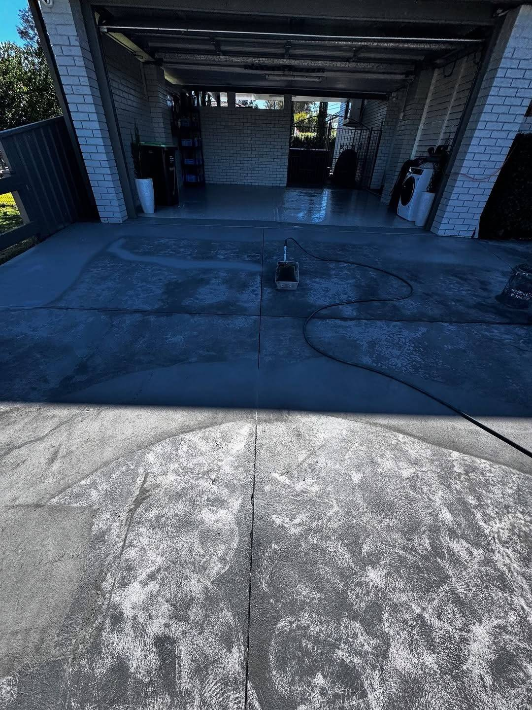

Driveways
Tired, stained or cracked driveways resurfaced in a textured or patterned finish. The existing slab stays; the surface is prepared, repaired and sprayed over.
Decorative spraycrete and concrete resurfacing across Sydney. Driveways, patios, pathways and pool surrounds sprayed, patterned and sealed — a new surface laid over the old one, not a coat of paint.





Spraycrete is a decorative overlay. It goes on top of sound concrete, takes a pattern or a texture while it is wet, and gets sealed once it has cured — so the finish is the product.
Tired, stained or cracked driveways resurfaced in a textured or patterned finish. The existing slab stays; the surface is prepared, repaired and sprayed over.
Outdoor living areas finished in a colour and texture that suits the house — including slip-resistant finishes around pools and wet areas.
Front paths, side access and entries, finished to match the driveway rather than left as the odd slab out.
Cooler-to-touch, textured finishes around pools and spas, sealed to handle splashing and salt without going slick.
Hard-wearing resurfaced floors for garages and sheds — swept, degreased and finished in a sealed coating that hoses down.
The spray sets the texture, the pattern is cut or stamped while it is workable, and the sealer decides how glossy it ends up. Those three choices are the whole design.
A close, even grain — closest to a smooth concrete look, easiest to sweep, and the usual choice for patios and modern driveways.
A heavier, more visible grain with better grip. Suits driveways on a slope, pool surrounds and anything that gets wet.
Tile, brick and paver patterns pressed into the surface or cut with a stencil, so the finished job reads as paving without the paving price.
Colour goes into the mix or on top as a tinted sealer — charcoal, greys, sandstone and terracotta tones that hold rather than fade in a season.
Matte for a natural look, gloss where the surface needs to shed water and show its colour. Both are re-sealable when the time comes.
Control joints followed, edges masked clean, and the wall line left sharp — the part that shows whether the job was rushed.
Most failed resurfacing starts with a surface that was not prepared. This is the sequence that keeps a finish bonded.
Slab condition, drainage, cracks and how the surface is used. If the base is failing, resurfacing is the wrong answer — and we say so.
Pressure clean, grind or acid etch, then mask walls, frames and garden beds.
Cracks, spalls and hollow patches filled and levelled before anything decorative goes on.
Overlay sprayed to an even depth, then textured or stamped while it is still workable.
Sealed once cured, with the cure time and first-wash advice explained before we leave.
Driveways, patios and paths — the finish is the whole point, so the photos are of the surface, not the street.

A sealed spraycrete surface is easy to live with. What shortens its life is hot tyres on a fresh seal, harsh cleaners, and never re-sealing.
Based in Sydney. If your suburb is not listed, ask — the answer is usually yes.
The suburb, roughly how many square metres, what the concrete is doing now, and the finish you have in mind. A photo from the street end tells us most of it.
Elite Spraycrete
Sydney NSW · 0461 577 543